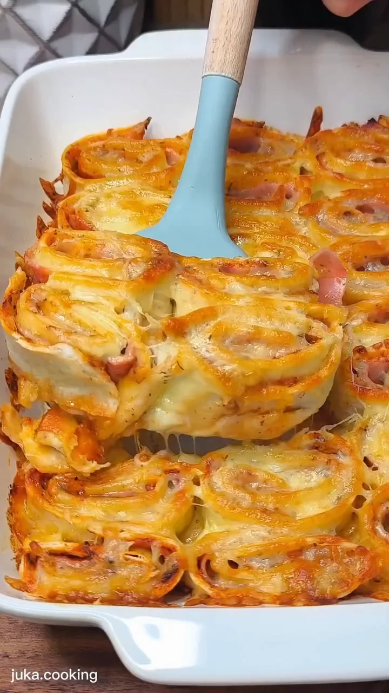

Knusprige Tortilla-Schinken-Käse-Rolle aus dem Ofen
Wenn es schnell gehen soll und trotzdem richtig lecker sein muss, ist dieses Rezept perfekt! Außen knusprig, innen herrlich käsig – ein einfaches Ofengericht mit wenigen Zutaten.
- 5 Zutaten
- 5 Schritte
Zur Zubereitung Video ansehen ↗
Zutaten
- Für die Soße
Zubereitung
- Tortillas mit Schinken und Käse belegen und aufrollen.
- In eine Auflaufform legen.
- Passierte Tomaten mit Thymian verrühren und darüber geben.
- Mit etwas zusätzlichem Käse bestreuen.
- Bei 200 °C Ober-/Unterhitze backen, bis der Käse goldbraun und geschmolzen ist.